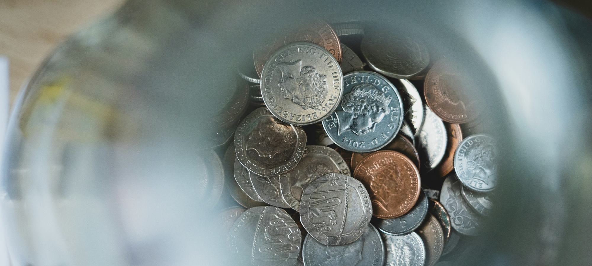
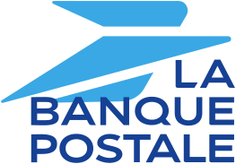

Comment faire son budget mensuel avec un petit salaire en 2026 ?
Le 18 du mois, il reste 74 € sur le compte et deux prélèvements à passer.

Des fiches pratiques, sans produit à vendre. Les règles qui comptent, les ordres de grandeur, et ce qu'il faut faire quand le mois est serré.

Le 18 du mois, il reste 74 € sur le compte et deux prélèvements à passer.


Le 18 du mois, il reste 74 € sur le compte et deux prélèvements à passer.
Trois mois de dépenses, six mois, un an de salaire ? Nous avons chiffré 8 situations, du premier emploi à l'indépendant, et comparé les livrets réglementés où placer cette somme depuis la hausse du Livret A à 1,7 % le 1er août 2026.
Dix comptes professionnels comparés, du compte gratuit de néobanque à la formule de banque de réseau qui dépasse 100 € par an.
Neuf comptes ouverts aux personnes sans revenus fixes, de la néobanque gratuite à l'offre clientèle fragile, passés au crible des mêmes quatre critères pondérés.
Vous hésitez entre un compte retiré chez le buraliste et une néobanque qui tient dans un téléphone ? Nous avons mis face à face les 7 offres de Nickel et de N26, de 0 € à 16,90 € par mois, sur quatre critères pondérés.

Vous venez de passer la barre des 10 000 € de chiffre d'affaires, ou vous voulez simplement séparer vos recettes de vos courses.
Note globale sur 10, relevé de démonstration. Un compte sans découvert ne coûte jamais d'agios, c'est le premier outil d'un budget serré.
Voir la méthode de notation



Comparez deux comptes sur nos cinq critères en un clic.
Listez vos revenus nets, retirez d'abord les dépenses fixes (logement, énergie, assurances, abonnements), puis fixez une enveloppe pour les courses et une somme à épargner dès le jour de la paie. La règle 50/30/20 sert de repère, elle n'a rien d'obligatoire.
L'usage est de garder de 3 à 6 mois de dépenses courantes disponibles à tout moment, sur un livret réglementé. Aucune règle officielle ne fixe ce montant.
1,7 % depuis le 1er août 2026, avec un plafond de 22 950 €. Le LDDS rapporte aussi 1,7 % et le LEP 2,5 % pour les foyers éligibles.
La méthode 50/30/20 propose 20 % pour l'épargne. Avec un petit salaire, mieux vaut un virement automatique fixe, même de 20 ou 30 €, qu'un objectif en pourcentage jamais tenu.
Oui. Un paiement sans provision est refusé, ce qui évite les agios et les commissions d'intervention, plafonnées à 8 € par opération et 80 € par mois.
Un email par semaine, le classement du mois, les nouveaux comparatifs et les hausses de tarifs bancaires repérées dans les plaquettes.
Pas de publicité, désinscription en un clic.